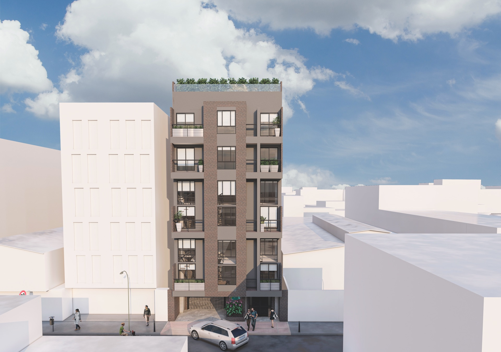
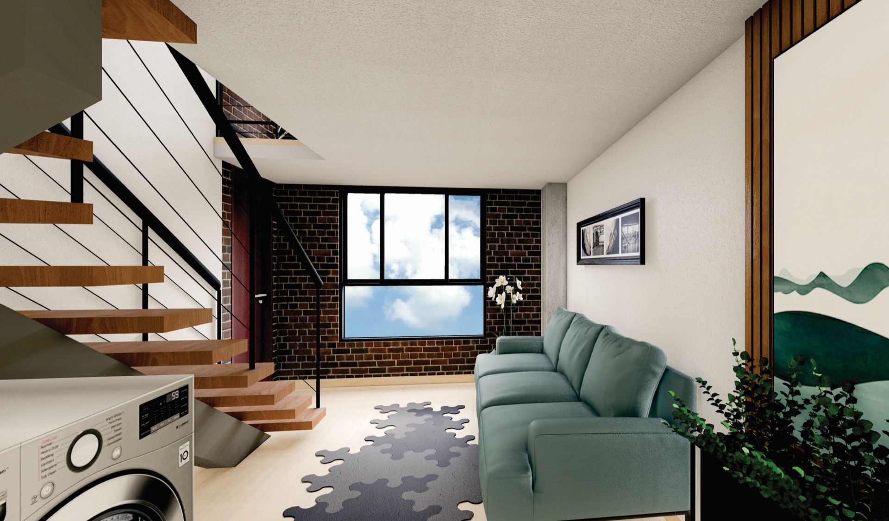

01
Unique
Una tipología que celebra la verticalidad. El mezzanine suma posibilidades para separar descanso, estudio y vida cotidiana.
- Espacios con balcón
- Mezzanine en tipologías seleccionadas
- Cocina y zona de lavandería

Santa Rosa Morato · Bogotá
Vive la ciudad a tu manera.
Apartaestudios que convierten cada metro en una forma más libre de vivir, crear y conectar.
01 — Una nueva perspectiva
CityLive 101 está pensado para quienes buscan vivir cerca de lo que importa, con espacios que se adaptan a una rutina dinámica y a una manera personal de habitar la ciudad.

02 — Galería CityLive
Selecciona una colección o abre cualquier render para vivir el proyecto en pantalla completa.
03 — Hecho para tu manera de vivir
01
Una tipología que celebra la verticalidad. El mezzanine suma posibilidades para separar descanso, estudio y vida cotidiana.
02
Una alternativa funcional para vivir, trabajar y disfrutar. Una distribución adaptable que aprovecha cada zona.
04 — Más allá de tu puerta
Terraza BBQ, coworking, zonas verdes y bicicleteros: espacios compartidos para darle más posibilidades a cada día.
05 — Ubicación estratégica
En Santa Rosa Morato, cerca de las conexiones que mueven tu día: Avenida Pepe Sierra, Calle 100 y Autopista Norte.
Calle 101 #70G-55CityLive 101
Habla con un asesor y recibe información actualizada sobre disponibilidad y opciones de compra.